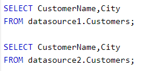
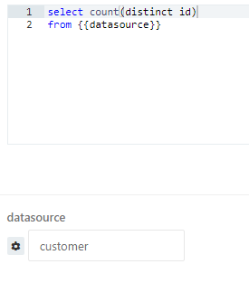

I have created several queries and added to a dashboard.
Can I share those query to different datasource instead of create another set of query and dashboard? (Datasource with the same data structure)
Thanks
I have created several queries and added to a dashboard.
Can I share those query to different datasource instead of create another set of query and dashboard? (Datasource with the same data structure)
Thanks
Your queries will be selecting FROM your current data source, so if you change the from in your queries does that fit your needs?
Let say I have 3 database with the exactly same data structure but different data.
I have created many queries and added to a dashboard.
However, if I want to duplicate another 2 database’s dashboard, I have to duplicate all of those query with different name?
The Queries can remain the same apart from the “FROM” part.

See here, where the data is coming from needs to be changed to match your new data source
Sorry, I may not explain clearly.
I am going to create 3 dashboard for 3 region of data. Each region of data is located in different database, i.e. datasource1, datasource2, datasource3.
If I want a dashboard to view 1 datasource, obviously create a set of queries (let say 50 queries) and add them to a dashboard. However, if I want to view those 3 regions’ data, I have to create 3 dashboard and create another 100 queries by copy & paste ? or any other better method ?
Thank you so much for the reply
I understand what you are asking now, what you can do is alter your FROM to be from any data source.

This allows you to write the table name in the data source box when you run the query meaning you can have one dashboard and choose which source you want it to query.
Make sure to click on the settings icon and tick “global” so that it works in your dashboard.
I used this function for limiting the date range, but never think of using on selecting tables
Thank you very much.
I tried it’s work, but there is another issue. If I change it, user group and permission on datasouce cannot maintain, all datasouce can be access by anyone
Any other suggestion?
Finally, I export queries, duplicate and import to solve my needs.
Export tools: https://goo.gl/RFM5DL
Import tools: https://goo.gl/2yCz6f
Hi All,
I have this same issue, and I don’t believe this was actually solved for us at least. In our setup we have 2 seperate hosts with Impala, and on those hosts there are multiple databases. The structure of the data in all of them is the same.
What we need is the ability to have a dashboard of queries where not only is the FROM able to be dynamic, but also the actual datasource. Just like when you are in the query window and you can choose a different datasource from the dropdown on the left.
Does that make sense and is it an option currently?